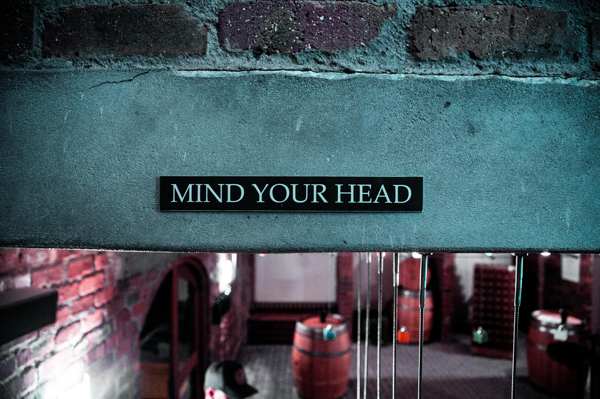

Like many terms in neuroscience, consciousness is a vague concept that is difficult to define. It should be something we know the most about, because after all, consciousness is what we are.
It's challenging to explain what it is, and we also can't tell what causes it. Further, we can hardly even spot it. A remark I've heard from Sam Harris, a neuroscientist and philosopher, is that our experiences are the only proof that consciousness exists. There is nothing in the human brain we can look at and say, this thing can think, at least for now. This is also called the first-person problem in philosophy. The idea struck me as a powerful perspective because it perfectly emphasizes the distinction between looking at a conscious structure from the outside and being one.
So, in this article, we dare to ask the question: how come the brain has experiences, can be aware of surroundings, have a feeling of self, and to what extent that feeling of self is justified? Like every other really interesting topic in science (say it with me) we don’t know the answer, yet. But we have theories.
The Hard and the Easy Problem
Before addressing the theories that attempt to explain consciousness, we need to explain the problem further. When talking about consciousness scientifically, a distinction can be made: the hard problem and the easy problem. The concept was first famously suggested by David Chalmers in the 1990s in his paper titled “Facing Up to the Problem of Consciousness.”
The easy problem asks how the brain creates cognitive skills like attention, awareness, reasoning, etc. The name is given not because explaining these is really easy (they most certainly are not), but because they seem easy relative to the hard problem, which asks: why do we even experience consciousness in the first place?
Living didn’t have to be an experience. We could have been like rocks that fall from mountains: with no capability to understand what’s going on. We could just live and move forward in time. Or, we could be like a bacterium, move only with instinct and not feel like we are making decisions.

Panpsychism
I want to point out that whether rocks or bacteria are conscious is a debated topic. If you haven’t heard about panpsychism, you may need to sit down and take a deep breath.
Panpsychism suggests that everything, to some extent, has consciousness, from neutrinos to rocks. As magical as it might sound, it has attractive arguments. It provides an alternative explanation to the hard problem by suggesting nothing emerges in the brain; rather, consciousness becomes gradually more dominant throughout evolution and is built into matter.
If it sounds too mystical to you, think about consciousness as communication. Communication has gradually evolved over time and can be seen in every part of nature, from bees dancing to show each other the way, to ants leaving trails to communicate where there’s food. It is such a vague term that it’s hard to draw the line where communication starts forming in our past. Does a rock hitting another rock communicate? What about two cells exchanging proteins to signal each other? If you want to say no to the first and yes to the second because cells are “living,” I want to ruin your day and introduce you to the idea that “living” is also a made-up term. Thus, we can stretch the definition and say everything has a way of communicating.
It’s possible to do the same with consciousness and raise the bar to the moon. It’s valid to be skeptical about it, as it doesn’t have any scientific reliability. However, it does answer some questions. If you want to learn more about it, there’s a detailed audio documentary created by Annaka Harris called “Lights On.”
But this is a metaphysical explanation for consciousness rather than a scientific one. Let’s go back to our safe place and think with proof.
The Theories
There are numerous theories that have been suggested about how consciousness emerges and what it is. There are some very interesting ones such as theories relating consciousness to quantum computations in neurons (Orchestrated Objective Reduction), and another that puts forward the idea that consciousness is created by electromagnetic field patterns in the brain (Electromagnetic Field Theory). But we’re going to focus on the four most dominant ones.
Integrated Information Theory (IIT)
This theory overlaps the most with panpsychism. It suggests that information is in every part of the brain, and the level of its integration is what creates consciousness. The unification of this information in the brain is what differentiates us from particles. The amount of information contained is different. It also puts forward a mathematical explanation and defines the amount of information held with the letter Φ (phi). This is valuable because it’s possible to do calculations and mathematical analysis on the theorem. But because it also suggests that information is integrated into matter, it’s difficult to prove scientifically.
One observation that supports this theory is the change in EEG patterns in patients under anesthesia: they are less “complex,” meaning they have lower integrated information. This correlates with the visible expression of consciousness, which is low. This is not the strongest evidence, but it definitely supports the theory.

High Order Theory (HOT)
HOT says that consciousness is created when we are aware that we are aware of something. The first round of awareness is called low-order representation. Being aware of a low-order representation is called a high-order representation. So, according to this theory, when you’re looking at a bottle, you’re not thinking of the bottle. Instead, you are becoming aware of the thought of the bottle.
One idea that supports this theory is that in some instances, even though we are not consciously aware of what we see, it still affects our behavior. That implies that there is another level of mechanism in the brain that we are not conscious of. There can be multiple explanations for this, and HOT is one of them.
Global Workspace Theory (GWT)
GWT theorizes that an experience becomes conscious when it’s “broadcast” in the brain. Multiple parts of the brain receive the information through neural signaling at the same time. This theory also defines a “hub”-like part of the brain where the information is broadcasted, called the "global workspace.” This hub-like region is thought to be the frontal-parietal cortical region (the top part of your brain).
MRI studies show that when a thought becomes conscious, different parts of the brain become active. This is evidence that strengthens the theory but, like the others, the evidence could be stronger.
Re-entry Theory
Re-entry is quite similar to GWT. Both require the information to travel to different parts of the brain. The difference is that this theory emphasizes the multiple forward-and-back actions of the signal. It’s not a one-way communication, but a two-way loop that happens continuously. Further, it doesn’t require a hub either. The loops can happen in any part of the brain independently.
One piece of evidence for this is that people with damaged thalamus regions mostly go into a vegetative state and lose consciousness. The thalamus is the part of the brain that is crucial for ordering and sending information to other parts of the brain. Any information regarding smell, touch, or vision goes through the thalamus to reach the correct brain region. Re-entry theory would guess that damage to this region would decrease consciousness as the loops of information in the brain are broken which is exactly what happens. Further, thalamus stimulation brings consciousness back in some patients.
The Elephant in the Room
As we’ve mentioned, there are so many other theories that try to explain consciousness. We don’t have enough strong evidence to take a side, but I’m hopeful that we’ll soon figure this out. After we solve the mystery, there may be some important implications. Even though we may be decades away from this advancement, one of the most apparent applications is AI. Figuring out how consciousness is created is a big step toward replicating it. If we succeed, the discussion about the ethical aspects of this is inevitable and, if I may, totally mesmerizing to think about.
In Summary
This article was an introduction to consciousness. Compared to other scientific aspects of neuroscience that are relatively new, a topic that also interests philosophy definitely brings centuries of accumulated ideas into the picture and makes the discussion richer than most. So far, we’ve discussed the approaches people take when starting to think about consciousness, but the reasons behind these approaches are definitely worth hearing about as well. So, if this topic interests you, I recommend you take a look at the other side of the iceberg.